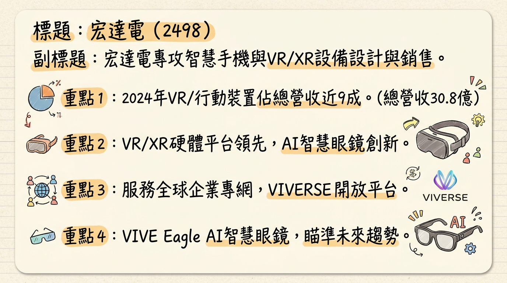
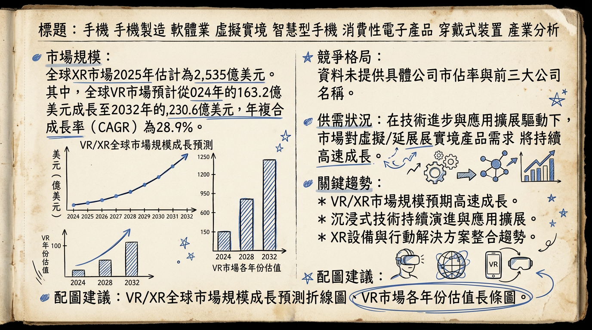
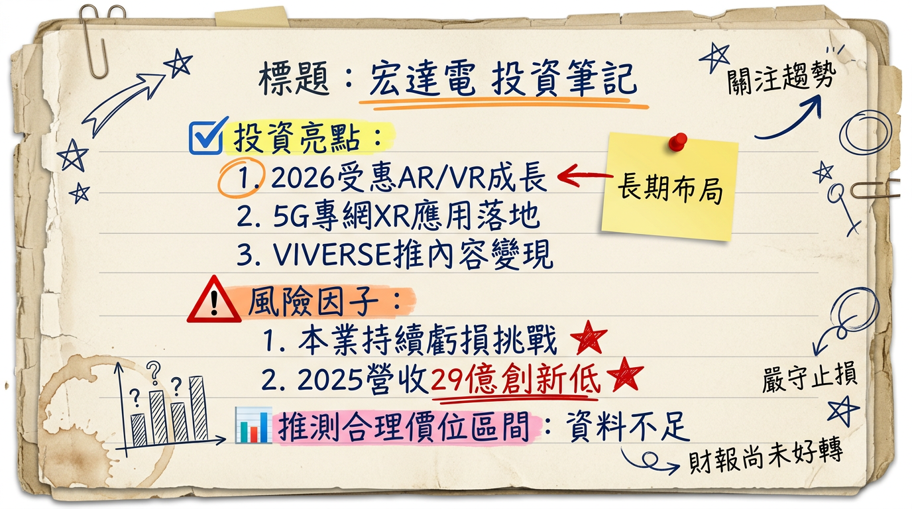

宏達電積極轉型XR/AI領域，VIVE Eagle智慧眼鏡與VIVERSE平台為2025/2026年成長核心。儘管2025年因出售XR團隊與處分資產獲得巨額業外收益，使其短期轉虧為盈，但本業仍面臨營收下滑與持續虧損壓力。市場對AI/XR前景雖抱持樂觀態度，法人普遍對其2026年營運持續保持審慎，等待核心業務獲利能力顯著改善。
宏達電（HTC）主要從事智慧型手機與虛擬實境（VR）/延展實境（XR）平台及生態系統的設計、製造與銷售業務。
根據2024年數據，虛擬實境設備和智慧型行動裝置為宏達電表現最佳的業務區塊。
| 業務區塊 | 營收貢獻 (新台幣億元) | 佔年度總營收比例 |
|---|---|---|
| VR設備與智慧行動裝置 | 27.1 | 87.99% |
| 其他業務 | 3.7 | 12.01% |
| 年度總營收 | 30.8 | 100% |
宏達電總部和研發中心位於台灣新北市。VIVE Eagle AI智慧眼鏡為「台灣製造並全球首發」。公司產品分銷至國內市場以及歐洲、美洲和亞洲等海外市場。公司曾於2025年處分桃園廠房與土地。
| 月份 | 金額 (新台幣億元) | 月增率 (MoM) | 年增率 (YoY) |
|---|---|---|---|
| 2026/01 | 1.61 | -44.91% | 0.04% |
| 2025/12 | 2.92 | -2.12% | -26.22% |
| 2025/11 | 2.98 | 56.28% | -8.68% |
| 2025/10 | 1.91 | -36.87% | -14.58% |
| 2025/09 | 3.02 | 13.35% | -10.52% |
| 2025/08 | 2.67 | 80.85% | 31.00% |
| 項目 | 2025年第三季數據 | 備註 |
|---|---|---|
| 季營收 | 新台幣7.2億元 | 年減7.43% |
| 毛利率 | 35.2% | |
| 營業淨損 | 新台幣8.5億元 | |
| 營業利益率 | -119.2% | 本業虧損嚴重 |
| 每股盈餘(EPS) | 新台幣3.88元 | 受惠於處分廠房與土地的一次性利益 |
| 項目 | 2024年 (實際) | 2025年 (實際/累計) | 2026年 (預估) |
|---|---|---|---|
| 年度營收 | 30.81億元 | 29億元 | - |
| 年增率 | -30.26% | -5.8% | - |
| 年度EPS | -4.11元 | 6.85元 (全年預估) | -3.86元 |
| 累計前三季EPS | - | 7.88元 | - |
| 券商名稱 | 目標價 (新台幣元) | 評等 | 日期 | 備註 |
|---|---|---|---|---|
| Goldman Sachs | 35.20 | 賣出 | 2025年06月02日 | |
| Goldman Sachs | 40.60 | 調降 | 2025年03月25日 | 評級從「買進」下調 |
| 美系外資 | 40.30 | 賣出 | 2025年11月17日 | 重申「賣出」評等，12個月平均目標價40.3元 |
| 來源 | 2025年EPS預估 | 2026年EPS預估 | 日期 | 備註 |
|---|---|---|---|---|
| 官股投顧 | 6.85元 | -3.86元 | 2026年01月07日 | 預期2026年本業將再度轉虧 |
| 美系外資 | 1.8元 | 3.06元 | 2024年01月08日 | ⚠️過時預估，僅供參考 |
| 季度 | 營收 (新台幣億元) | 毛利率 | 營業利益率 | 稅後淨利 (新台幣億元) | EPS (新台幣元) | 備註 |
|---|---|---|---|---|---|---|
| 2025年Q3 | 7.16 | 35.2% | -119.2% | 32.43 | 3.88 | 受處分廠房土地利益挹注 |
| 2025年Q2 | 7.0 | 36.5% | -120.0% | -7.17 | -0.86 | 營業淨損8.4億元 |
| 2025年Q1 | 9.6 | 37.6% | - | 40.5 | 4.86 | 受與Google協議收益挹注，終結長期虧損 |
| 2024年Q4 | 6.84 | 38.3% | - | -8.7 | -1.05 |
宏達電的利潤率呈現明顯受業外收益主導的特徵。2025年第一季因與Google的XR技術合作協議獲得2.5億美元（約新台幣76億元），使其稅後純益達40.5億元，EPS 4.86元，成功終結連續27季虧損。2025年第三季則受惠於處分桃園廠房與土地予和碩（4938），認列約新台幣39億元處分利益，使得單季稅後淨利達32.43億元，EPS 3.88元。
然而，公司的本業持續虧損，營業利益率維持負值且規模龐大（例如2025年第三季為-119.2%），顯示核心營運業務尚未能產生穩定獲利。毛利率雖維持在35%以上，但未能彌補龐大的營業費用。
| 季度 | 存貨週轉天數 (天) | 應收帳款週轉天數 (天) | 備註 |
|---|---|---|---|
| 2025年Q3 | 103.0 | 62.06 | 存貨去化加速，應收帳款收現效率改善 |
| 2025年Q2 | 112.09 | 70.45 | |
| 2025年Q1 | 148.61 | 67.25 | |
| 2024年Q4 | 158.73 | 50.78 |
宏達電的存貨週轉天數自2024年第四季的158.73天下降至2025年第三季的103.0天，顯示存貨去化速度加快，庫存管理有所改善，目前未見異常堆積現象。應收帳款週轉天數則在過去一年內波動，2025年第三季略有改善。
| 季度 | 折舊 (千元) | 攤銷 (千元) |
|---|---|---|
| 2025年Q3 | 48,203 | 4,367 |
| 2025年Q2 | 56,000 | 7,000 |
| 2025年Q1 | 57,000 | 2,000 |
| 2024年Q4 | 57,000 | 5,000 |
| 季度 | 自由現金流 (千元) | 備註 |
|---|---|---|
| 2025年Q3 | -2,978,800 | 本業現金流出加劇，業外收入雖高，但未能持續改善自由現金流 |
| 2025年Q2 | -2,150,000 | |
| 2025年Q1 | 16,940,000 | 受與Google協議收益大幅挹注 |
| 2024年Q4 | -2,150,000 |
* 子公司HTC Holding B.V.於2025年8月26日公告現金減資約歐元1,300萬元，減資比率10.96%。
* 兩項減資目的均為配合集團資金規劃。
* VR 市場規模： 2025年預計為208.3億美元，2026年成長至267.1億美元，2034年達1,713.3億美元，2026-2034年CAGR為26.20%。
* XR 市場規模： 2025年估計為2,535億美元，2026年成長至3,460.9億美元，2034年達2.12781兆美元，2026-2034年CAGR為25.5%。
* 市場規模： 2025年預計為6,092億美元，2026年為6,567億美元，2035年達1.19兆美元，2026-2035年CAGR為7.8%。
* 出貨量： Omdia預估2025年全球出貨量成長2%至12.5億支。但Counterpoint Research和TrendForce警告，因記憶體短缺和漲價，2026年全球智慧型手機出貨量將年減12.4%，跌破11億支。
| 公司名稱 | 市佔率 |
|---|---|
| Meta | 74% |
| Pico | 8% |
| DPVR | 4% |
| Apple | 3% |
| Sony | 3% |
| 其他 | 8% |
| 特性 | 宏達電 (HTC) | Meta (Quest 系列) | Apple (Vision Pro) | Sony (PlayStation VR2) | Pico |
|---|---|---|---|---|---|
| 技術與產品 | VR/XR設備： VIVE Eagle (AI智慧眼鏡), VIVE XR Elite (可轉換XR頭戴), VIVE Focus/Pro/Flow系列。軟體/平台： VIVERSE (開放式3D內容平台), G REIGNS (5G專網/邊緣運算)。手機： 智慧型手機、區塊鏈手機。強調AI與XR結合，技術較為多元。 | VR設備： Quest系列 (Quest 3)。主導消費級VR市場，在遊戲應用方面有強大生態。 | MR設備： Vision Pro。高規格混合實境技術，視訊穿透(VST)技術領先，但定價高昂。 | VR設備： PlayStation VR2。專為PS5遊戲機設計，提供高品質VR遊戲體驗。 | XR設備： 在XR市場佔一席之地，在中國市場表現較好。 |
| 客戶與市場 | 企業級解決方案： 訓練與模擬、遊戲與電競、VR展覽、工業現場應用 (G REIGNS)。消費級： VIVE Eagle（台灣大哥大綁約、擴大體驗據點）。著重於特定垂直市場應用及B2B市場，也佈局AI眼鏡消費市場。與Google合作開發XR生態圈。 | 消費級市場： 高市佔率，但受市場需求放緩影響。 | 法人研究開發/高階用戶： 2024年出貨量主要限於此用途，普及率有限。正在規劃2026年後推出更平價機種。 | 遊戲玩家： 主要面向PS5遊戲玩家，出貨量2024年有所減少。 | 中國市場/線下娛樂： 在中國市場及特定線下娛樂(LBE)專案方面表現較好。 |
| 價格 | 銷售高附加價值產品與服務，VIVE Eagle定價520美元。 | 相對親民的消費級定價，有助於其在消費市場普及。 | 極高價位，限制了其在主流消費市場的滲透。 | 捆綁PS5，遊戲配件。 |
* 影響： AI與XR融合加速，生成式AI功能被導入手機與XR裝置。AI智慧眼鏡成為新焦點，AI能個性化訓練內容，提供即時回饋，提升可衡量效益。
* 具體影響： 宏達電VIVE Eagle AI智慧眼鏡直接抓住此趨勢，其G REIGNS團隊的邊緣運算應用也與AI部署密切相關。
* 影響： MR技術模糊VR和AR界限，預計VR市場未來將歸類為MR。新一代XR頭戴裝置透過視訊穿透(VST)技術，結合真實與虛擬影像，提供更沉浸和互動的體驗，設備朝輕量化、高解析度、無線化發展。
* 具體影響： Apple Vision Pro等產品推動MR市場熱度，宏達電的VIVE XR Elite也具備MR功能，需持續創新以應對市場轉變。
* 影響： 5G低延遲、高頻寬特性及邊緣運算，解決XR應用技術瓶頸，使得多使用者VR協作、工業現場即時可視化等企業級應用成為可能。XR與數位孿生、工業4.0整合，轉變為提高生產力的工具。
* 具體影響： 宏達電的G REIGNS團隊服務直接受惠於此趨勢，深耕企業專網與邊緣運算解決方案。
| 時間點 | 成長動能重點 | 具體事件與量化目標 |
|---|---|---|
| 2025年Q1 | 業外收益挹注 | 與Google的XR研發團隊與IP非專屬授權協議完成，獲得2.5億美元（約新台幣76億元），帶動單季EPS 4.86元，終結連續虧損。 |
| 2025年Q3 | 資產活化，業外收益 | 處分桃園廠房與土地予和碩（4938），認列約新台幣39億元處分利益，帶動單季EPS 3.88元。 |
| 2025年06月 | 管理層信心喊話，AI長期投資 | 董事長王雪紅在股東會表示2025年會賺錢，2026年考慮配息與庫藏股，強調AI是下一階段核心動能，需大量投資（LLM投資規模達千億級），是很好時機點。 |
| 2025年08月中旬 | 新產品上市 (AI智慧眼鏡) | VIVE Eagle AI智慧眼鏡上市，搭載Google Gemini與OpenAI GPT大模型。 |
| 2025年08月30日 | 新市場拓展 (醫療健康、LBE) | 與美國AT&T、Mynd Immersive及Select Rehabilitation合作，擴大全美數位健康照護版圖，將沉浸式XR治療平台導入超過150間高齡照護機構。 VIVERSE與日本NTT Communications簽署合作備忘錄，推動大場域沉浸式實景娛樂（LBE）於日本應用。 |
| 2025年09月10日 | 市場需求預期 (AR/VR裝置出貨量) | 法人預估，受惠於AI眼鏡崛起，2026年全球AR、VR裝置出貨量將比2025年大增近90%。 |
| 2025年11月12日 | VIVERSE應用擴展 (教育) | VIVERSE積極推動XR教育，與台北市辛亥國小和台南應用科技大學多媒體動畫系合作，導入VIVERSE Create平台。 |
| 2025年Q4 (預期) | AI眼鏡與XR軟體專案帶動營收 | 法人預期2025年第四季營收可望較第三季成長173%，達到新台幣19.6億元。 |
| 2026年01月06日 | VIVE Eagle新市場與通路佈局 | VIVE Eagle AI智慧眼鏡正式拓展香港市場，攜手電信商1O1O、csl、SmarTone及奢華眼鏡通路溥儀眼鏡。同時，HTC全面升級台灣實體體驗門市，與台灣大哥大、小林眼鏡合作，全台體驗據點已突破300家。 |
| 2026年01月07日 | AI眼鏡市場潛力 | IDC預估2025年全球AI眼鏡出貨量年增率38%至58億美元產值；2026年出貨量可望突破900萬副，市場規模上看75億美元；至2030年止，AI眼鏡出貨量有機會擴增至3500萬副，整體產值挑戰百億美元。宏達電VIVE Eagle在此趨勢中具潛力。 |
| 2026年03月03日 | VIVERSE合作夥伴計畫啟動 | VIVERSE推出全新合作夥伴計畫，為遊戲、影片、互動網頁應用、數位藝術與沉浸式內容創作者提供以真實觀眾互動為基礎的績效型收益機制，依據「有效觀看」與「互動時間」計算收益，推動內容生態系發展。 |
| 2026年03月04日 | G REIGNS 5G專網應用深化 | HTC G REIGNS於MWC2026與光寶科技共同展示雙方在德國成功落地的5G專網商業應用成果。此專案採用5G SA專網架構，整合XR與邊緣運算技術於企業沉浸式應用場域，展現可擴展性、穩定性及低延遲優勢，將支持電信營運商於高密度應用場域的部署需求，為5G-Advanced與B5G世代的網路演進奠定商用實證基礎。 |
| 2026年 | 硬體營收與合併營收增長 | 法人對2026年前景樂觀，預期硬體營收（受AI眼鏡和新手機帶動）和合併營收（受IP合作專案帶動）均有望實現雙位數年增長。 |
綜合以上分析，宏達電（2498）正處於關鍵的轉型期，儘管在AI/XR新興領域展現積極佈局，但其投資價值仍需審慎評估。
考慮到宏達電在AI/XR領域的潛在成長動能，以及其本業持續虧損的現實，並參考目前券商的平均目標價與評等，本報告建議投資者對宏達電保持觀望態度。若公司能持續展現AI/XR業務的明確營收與獲利轉折，潛在目標價區間或可落在新台幣38元至45元。然而，鑑於本業持續虧損及競爭壓力，此目標價仍具高度不確定性，投資人應密切關注後續財報表現與市場需求，尤其需待看到核心業務穩定獲利的明確信號後，再行評估是否值得積極投資。
本報告由 AI 自動產生，資料來源為公開網路資訊，僅供參考，不構成投資建議。產生時間：2026-03-06 12:54


